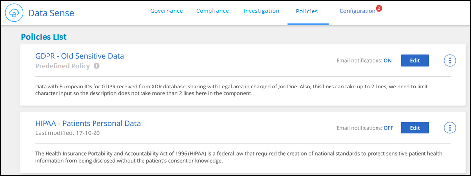
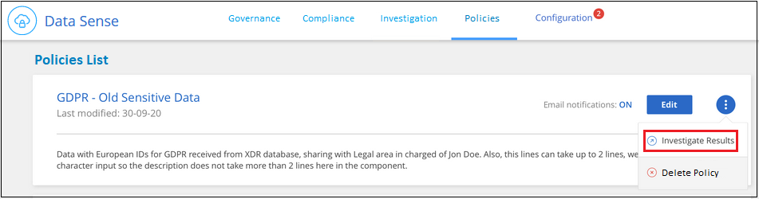
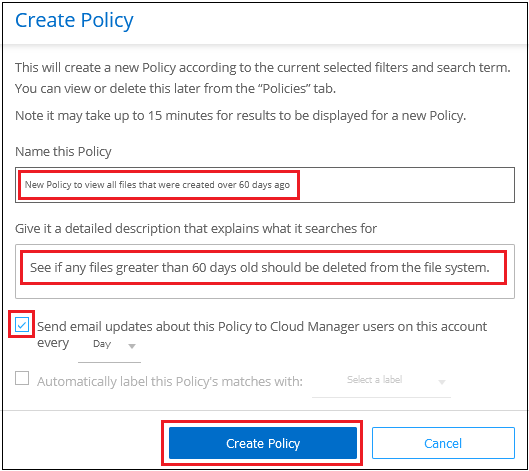

プライベートデータの管理
Cloud Data Sense は、プライベートデータを管理するためのさまざまな方法を提供します。一部の機能では、最も重要なデータを簡単に確認できます。その他の機能を使用すると、データに変更を加えることができます。
-
「ポリシー」機能を使用すると、 1 つのボタンをクリックして簡単に結果を表示できるように、独自のカスタム検索クエリを作成できます。
-
特定の重要なポリシーが結果を返すと、 Cloud Manager ユーザに E メールアラートを送信できます。
-
ステータスは、特定の種類のフォローアップのためにマークするファイルに追加できます。
-
に登録している場合は "Azure 情報保護（ AIP ）" ファイルを分類して保護するには、 Cloud Data Sense を使用して AIP ラベルを管理します。
-
安全でないようであるか危険すぎると思われるファイルを削除して、ストレージシステムに残すことも、重複として識別したファイルを削除することもできます。
ポリシーを使用したデータの制御
ポリシーは、よく要求されるコンプライアンスクエリーの [ 調査 ] ページで検索結果を表示するカスタムフィルタのお気に入りリストのようなものです。Cloud Data Sense は、お客様からの一般的なリクエストに基づいて、一連の事前定義されたポリシーを提供します。組織固有の検索結果を提供するカスタムポリシーを作成できます。
ポリシーには次の機能があります。
-
事前定義されたポリシー ユーザの要求に基づいて作成されます
-
独自のカスタムポリシーを作成できます
-
ポリシーの結果を含む [ 調査 ] ページを起動します ワンクリックで
-
Cloud Manager ユーザに特定の重大度の E メールアラートを送信する ポリシーによって結果が返されるので、通知を取得して保護することができます データを
-
AIP の割り当て（ Azure 情報保護） 定義された条件に一致するすべてのファイルに自動的にラベルを付けます ポリシー内
順守ダッシュボードの * ポリシー * タブには、クラウドデータセンスのこのインスタンスで使用可能なすべての定義済みおよびカスタムポリシーが一覧表示されます。

さらに、 [ 調査 ] ページの [ フィルタ ] リストにポリシーが表示されます。
[ 調査 ] ページでポリシーの結果を表示します
[ 調査 ] ページでポリシーの結果を表示するには、をクリックします  ボタン"] ボタンをクリックして特定のポリシーを選択し、 * 調査結果 * を選択します。
ボタン"] ボタンをクリックして特定のポリシーを選択し、 * 調査結果 * を選択します。

カスタムポリシーを作成しています
組織固有の検索結果を提供する独自のカスタムポリシーを作成できます。
-
[ データ調査 ] ページで、使用するすべてのフィルタを選択して検索を定義します。を参照してください "[ データ調査 ページでデータをフィルタリングします"^] を参照してください。
-
必要な方法でフィルタ特性をすべて設定したら、 [ この検索からポリシーを作成する *] をクリックします。
-
ポリシーに名前を付け、そのポリシーで実行できるその他のアクションを選択します。
-
一意の名前と説明を入力します。
-
必要に応じて、 Cloud Manager ユーザに通知 E メールを送信する場合はチェックボックスをオンにし、 E メールの送信間隔を選択します。
-
必要に応じて、このチェックボックスをオンにすると、ポリシーパラメータに一致するファイルに AIP ラベルが自動的に割り当てられ、ラベルが選択されます。（ AIP ラベルがすでに統合されている場合のみ。の詳細を確認してください AIP ラベル. ）
-
[ ポリシーの作成 *] をクリックします。

-
[ ポリシー ] タブに新しいポリシーが表示されます。
ポリシーの編集
ポリシーのタイプに応じて、ポリシーの特定の部分を変更できます。
-
カスタムポリシー - _ 名前 _ 、 _ 概要 _ 、電子メール通知の送信の有無、および ラベルの追加の有無を変更できます。
-
定義済みポリシー - 電子メール通知が送信されるかどうか、および AIP ラベルが追加されるかどうかだけを変更できます。
| カスタムポリシーのフィルタパラメータを変更する必要がある場合は、必要なパラメータを含む新しいポリシーを作成してから、古いポリシーを削除する必要があります。 |
ポリシーを変更するには、 [ 編集 *] ボタンをクリックし、 _Edit Policy_page に変更を入力して、 [ ポリシーの保存 *] をクリックします。
ポリシーの削除
作成したカスタムポリシーが不要になった場合は削除できます。事前定義されたポリシーは削除できません。
ポリシーを削除するには、をクリックします ボタン"] ボタンをクリックして特定のポリシーを削除し、確認ダイアログでもう一度 ［ * ポリシーの削除 * ］ をクリックします。
ステータスタグを適用して、スキャンしたファイルを管理します
ステータスは、特定の種類のフォローアップのためにマークするファイルに追加できます。たとえば、重複するファイルがいくつか見つかった場合に、それらのファイルを 1 つ削除する必要がありますが、削除するファイルを確認する必要があります。このファイルに「削除するチェック」のステータスを追加すると、このファイルに何らかの調査と将来のアクションが必要であることがわかります。
データセンスを使用すると、ファイルに割り当てられているステータスの表示、ファイルへのステータスの追加、名前の変更、または既存のステータスの削除を行うことができます。
AIP ラベルがファイルメタデータの一部であるのと同じ方法で、ステータスがファイルに追加されないことに注意してください。ステータスは、 Cloud Data Sense を使用している Cloud Manager ユーザから確認できるようになったため、ファイルの削除が必要かどうかを確認したり、フォローアップの種類を確認したりすることができます。
ファイルに割り当てられているステータスタグの表示
特定のステータスが割り当てられているすべてのファイルを表示できます。
-
Cloud Data Sense の [* Investigation* （調査 * ） ] タブをクリックします。
-
[ データ調査 ] ページで、 [ フィルタ ] ペインの [ ステータス *] をクリックし、 [ 必要なステータス ] を選択します。
ペインから特定のステータスを選択する方法を示すスクリーンショット。"]
[ 調査結果 ] ペインには、そのステータスが割り当てられているすべてのファイルが一覧表示されます。
ファイルへの Status タグの割り当て
ファイルに Status タグを追加、変更、および削除できます。
-
[ データ調査結果 ] ペインで、をクリックします
 をクリックします。
をクリックします。 -
[ ステータス * （ Status * ） ] フィールドをクリックして、 [ ステータス（ Status ） ] ：
-
既存のステータスを割り当てるには、そのステータスをクリックします。たとえば、「 Action Required 」などです。
-
新しいステータスを作成してファイルに割り当てるには、 [ 新規ステータスの追加 ] をクリックし、新しいステータスの名前を入力して、 [ 完了 *] をクリックします。
ページでステータスタグをファイルに割り当てる方法を示すスクリーンショット。"]
Status タグがファイルメタデータに表示されます。
-
Status タグの編集と削除
Status タグを編集して名前を変更したり、不要になった Status タグを削除したりできます。をクリックします 既存のステータスの場合は、 * ステータス名の編集 * または * ステータスの削除 * をクリックします。
ステータス名を変更すると、古い名前を使用していたすべてのファイルで変更されます。
Status タグを削除すると、 Status を使用していたすべてのファイルから消去されます。
AIP ラベルを使用してデータを分類する
加入している場合、 Cloud Data Sense がスキャンしているファイルで AIP ラベルを管理できます "Azure 情報保護（ AIP ）"。AIP を使用すると、コンテンツにラベルを適用することで、ドキュメントやファイルを分類して保護できます。データセンスを使用すると、既にファイルに割り当てられているラベルを表示したり、ファイルにラベルを追加したり、ラベルが既に存在する場合にラベルを変更したりできます。
クラウドデータセンスは、 .DOC 、 .DOCX 、 .pdf 、 .PPTX 、 .XLS 、 .xlsx 。
現在、 30MB を超えるファイルのラベルは変更できません。OneDrive アカウントの場合、最大ファイルサイズは 4MB です。
| AIP に存在しないラベルがファイルにある場合、 Cloud Data Sense はラベルのないファイルと見なします。 |
ワークスペースへの AIP ラベルの統合
AIP ラベルを管理するには、既存の Azure アカウントにサインインして AIP ラベル機能をクラウドデータセンスに統合する必要があります。有効にすると、すべてのファイルの AIP ラベルを管理できます "作業環境とデータソース" をクリックします。
-
アカウントと Azure Information Protection のライセンスが必要です。
-
Azure アカウントのログインクレデンシャルが必要です。
-
Amazon S3 バケット内のファイルのラベルを変更する場合は、権限「 3 ： PutObject 」が IAM ロールに含まれていることを確認します。を参照してください "IAM ロールを設定します"。
-
Cloud Data Sense Configuration ページで、 Integrate AIP Labels をクリックします。

-
[Integrate AIP Labels （ AIP ラベルの統合） ] ダイアログで、 [* Sign in to Azure* （ Azure にサインイン） ]
-
表示される Microsoft ページで、アカウントを選択し、必要なクレデンシャルを入力します。
-
Cloud Data Sense タブに戻り、「 AIP Labels were successfully integrated with the account <account_name> 」というメッセージが表示されます。
-
[* 閉じる ] をクリックすると、ページの上部に「 AIP ラベル integrated_ 」というテキストが表示されます。

AIP ラベルは、 ［ 調査 ］ ページの結果ペインで表示および割り当てることができます。また、ポリシーを使用して AIP ラベルをファイルに割り当てることもできます。
ファイルで AIP ラベルを表示する
ファイルに割り当てられている現在の AIP ラベルを表示できます。
[ データ調査結果 ] ペインで、をクリックします をクリックします。

AIP ラベルを手動で割り当てる
Cloud Data Sense を使用して、ファイルに AIP ラベルを追加、変更、および削除できます。
AIP ラベルを 1 つのファイルに割り当てる手順は、次のとおりです。
-
[ データ調査結果 ] ペインで、をクリックします
をクリックします。 ページのファイルのメタデータの詳細を示すスクリーンショット。"]
ページのファイルのメタデータの詳細を示すスクリーンショット。"] -
[* このファイルにラベルを割り当て * ] をクリックして、ラベルを選択します。
ラベルがファイルメタデータに表示されます。
ポリシーを使用して AIP ラベルを自動的に割り当てます
AIP ラベルは、ポリシーの条件を満たすすべてのファイルに割り当てることができます。ポリシーの作成時に AIP ラベルを指定することも、ポリシーの編集時にラベルを追加することもできます。
Cloud Data Sense がファイルをスキャンすると、ファイルにラベルが追加または更新されます。
ラベルがすでにファイルに適用されているかどうか、およびラベルの分類レベルによって、ラベルを変更するときに次のアクションが実行されます。
| ファイルの内容 | 作業 |
|---|---|
にはラベルがありません |
ラベルが追加されます |
下位レベルの分類の既存のラベルがあります |
上位レベルのラベルが追加されます |
より高いレベルの分類の既存のラベルがあります |
上位レベルのラベルが保持されます |
手動とポリシーの両方でラベルが割り当てられます |
上位レベルのラベルが追加されます |
2 つのポリシーによって 2 つの異なるラベルが割り当てられます |
上位レベルのラベルが追加されます |
AIP ラベルを既存のポリシーに追加する手順は、次のとおりです。
-
[ ポリシーリスト ] ページで、 AIP ラベルを追加（または変更）するポリシーの Edit をクリックします。

-
[ ポリシーの編集 ] ページで、 [ ポリシー ] パラメータに一致するファイルの自動ラベルを有効にするチェックボックスをオンにして、ラベル（ General など）を選択します。

-
[ ポリシーの保存 *] をクリックすると、 [ ポリシー概要 ] にラベルが表示されます。
| ポリシーにラベルが設定されていても、ラベルが AIP から削除されている場合、ラベル名はオフになり、ラベルは割り当てられなくなります。 |
AIP 連動の削除
ファイル内の AIP ラベルを管理する機能が不要になった場合は、クラウドデータセンスインターフェイスから AIP アカウントを削除できます。
データセンスを使用して追加したラベルは変更されません。ファイルに存在するラベルは、現在存在しているラベルのままになります。
-
_Configuration_page で、 *AIP ラベル統合 > 統合の削除 * をクリックします。

-
確認ダイアログで、 [ 統合の削除（ Remove Integration ） ] をクリックします。
準拠していないデータが見つかった場合に E メールアラートを送信する
Cloud Data Sense は、特定の重要なポリシーの結果が返されたときに Cloud Manager ユーザに E メールアラートを送信して、データを保護する通知を受け取ることができます。E メール通知は、日単位、週単位、または月単位で送信することができます。
この設定は、ポリシーの作成時または任意のポリシーの編集時に設定できます。
既存のポリシーにメールの更新を追加するには、次の手順を実行します。
-
[ ポリシーリスト ] ページで、電子メール設定を追加（または変更）するポリシーの [ 編集 *] をクリックします。

-
ポリシーの編集ページで、 Cloud Manager ユーザに通知 E メールを送信する場合はチェックボックスをオンにし、 E メールの送信間隔（毎週 * Week * など）を選択します。

-
［ * ポリシーの保存 * ］ をクリックすると、電子メールの送信間隔が ［ ポリシー概要 ］ に表示されます。
最初の電子メールは、ポリシーからの結果がある場合に送信されます。ただし、ポリシーの条件を満たすファイルがある場合に限ります。通知メールに個人情報は送信されません。E メールには、ポリシーの条件に一致するファイルがあり、ポリシーの結果へのリンクが記載されています。
ソースファイルを削除しています
ストレージシステムに残すソースファイルや重複として識別したソースファイルは、安全でないように見えたり危険すぎるソースファイルを完全に削除することができます。このアクションは永続的であり、元に戻すことはできません。
| ボリューム・バックアップ内のデータベースまたはファイルに存在するファイルは削除できません。 |
ファイルを削除するには、次の権限が必要です。
-
NFS データ–書き込み権限でエクスポートポリシーを定義する必要があります。
-
CIFS データ– CIFS クレデンシャルには書き込み権限が必要です。
-
S3 データの場合 - IAM ロールに次の権限を含める必要があります。「 3 ： DeleteObject 」
-
[ データ調査結果 ] ペインで、をクリックします
をクリックします。 ページのファイルのメタデータ詳細から [ ファイルの削除 ] ボタンを選択したことを示すスクリーンショット。"]
ページのファイルのメタデータ詳細から [ ファイルの削除 ] ボタンを選択したことを示すスクリーンショット。"] -
[ このファイルを削除する *] をクリックします。
-
削除操作は永続的であるため ' 後続の _Delete File_Dialog に「 * permanently delete * 」と入力し ' * ファイルの削除 * をクリックする必要があります
事前定義されたポリシーのリスト
Cloud Data Sense で提供されるシステム定義のポリシーは次のとおりです。
| 名前 | 説明 | ロジック |
|---|---|---|
S3 公開プライベートデータ |
個人または機密性の高い個人情報を含む S3 オブジェクト。オープンなパブリック読み取りアクセスが許可されます。 |
（ S3 Public ）に格納され、個人情報または機密性の高い個人情報を含む） |
PCI DSS ： 30 日以上の古いデータ |
クレジットカード情報を含むファイル。最終更新日は 30 日前です。 |
クレジットカードと最終変更日が 30 日以上含まれます |
HIPAA ： 30 日以上のデータを停滞させます |
ヘルス情報が含まれるファイル。最終更新日は 30 日前です。 |
健康データを含む（ HIPAA レポートと同様に定義されている） そして、最終変更日は 30 日です |
プライベートデータ– 7 年以上前から停滞しています |
個人情報または機密性の高い個人情報を含むファイル。最終更新日は 7 年前に変更されました。 |
個人情報または機密性の高い個人情報を含むファイル。最終更新日は 7 年前に変更されました |
GDPR –欧州市民 |
EU 加盟国の市民の 5 つ以上の ID を含むファイル、または EU 加盟国の市民の ID を含む DB テーブル。 |
（ 1 つの） EU 市民または DB テーブルの 5 つ以上の識別子を含むファイル。列の 15% 以上の行と、 1 つの国の EU 識別子が含まれています。（欧州諸国のいずれかの国の識別子。ブラジル、カリフォルニア、米国 SSN 、イスラエル、南アフリカを含まない） |
CCPA –カリフォルニア州在住 |
この識別子を持つ 10 を超えるカリフォルニアドライバのライセンス ID または DB テーブルを含むファイル。 |
10 を超える California Driver のライセンス ID または DB を含むファイル カリフォルニアドライバのライセンスを含むテーブル |
データ主体名–高リスク |
50 を超えるデータ主体名を持つファイル。 |
50 を超えるデータ主体名を持つファイル |
E メールアドレス–リスクが高くなります |
E メールアドレスが 50 を超えるファイル、または E メールアドレスを含む行の 50% を超える DB 列 |
E メールアドレスが 50 を超えるファイル、または E メールアドレスを含む行の 50% を超える DB 列 |
個人データ–高いリスク |
個人データ識別子が 20 個を超えるファイル、または個人データ識別子を含む行の 50% を超える DB 列。 |
20 以上の個人用のファイル、または個人を含む行の 50% を超える DB 列を持つファイル |
機密性の高い個人データ–高いリスク |
機密性の高い個人データ識別子が 20 を超えるファイル、または機密性の高い個人データを含む行の 50% を超える DB 列。 |
機密性の高い個人用のファイル、または機密性の高い個人を含む行の 50% 以上を含む DB 列 |
 GitHub で編集
GitHub で編集